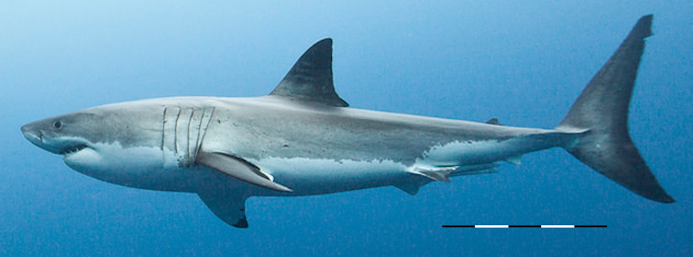

Though the world was going through vast changes at the time, temperature did not play a part for the megalodon's extinction. It was more likely that during the rapid decline of animals during the Miocene and Pliocene was when megalodons started to go extinct. They heavily relied on smaller organisms for food. During the Pliocene, there was a mega megafauna extinction. This meant that during the Pliocene, 36% of all large mammals went extinct. This percentage meant 55% of marine animals, 35% of seabirds, 9% of sharks, and 43% of sea turtles. Overall, the megalodon's size was too big to sustain during a time where its food sources were dwindling.The way the food chain starts with the smallest ogranism and impacts the chain all the way up to the biggest shows resilience. The stalling of the Gulf Stream made nutirent rich water from being distrubted properly. This may seem like a tiny and insignificant loss, however, its much bigger than one would imagine. These nutrients feed all types of organisms and other organisms feed those organisms. To put it in short, if nurtrient water disappears then the reulsts would be devastating. As mentioned before, this could cause tons of animals to go exctinct, leaving the food chain much smaller than before.
